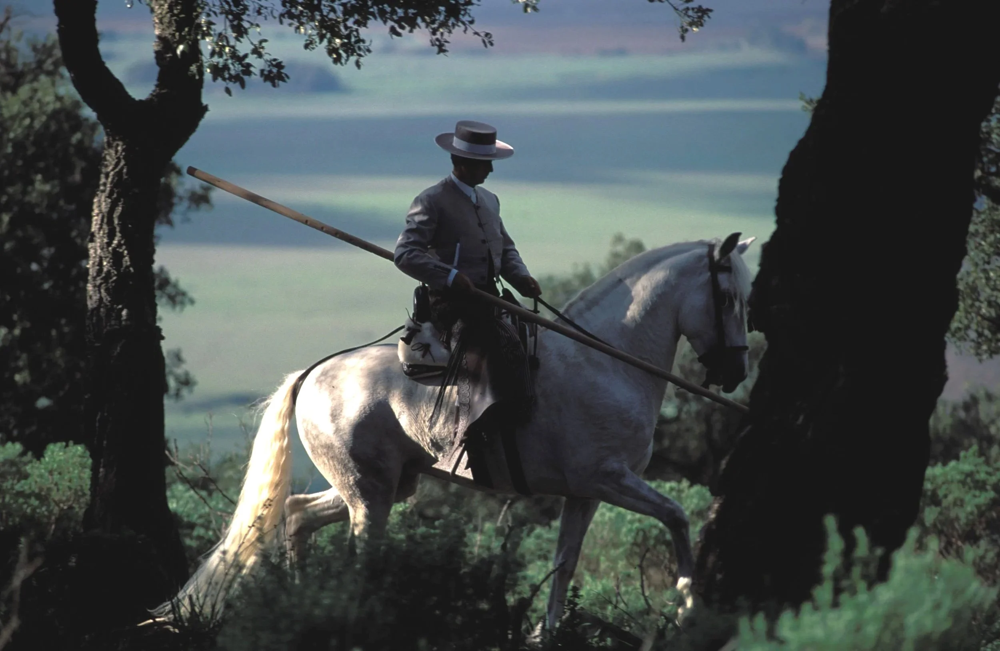

About Given Free Rein
Discover the stories, landscapes, and traditions that connect horses and humans around the globe.
Read the Story →


Set to music and performed at full gallop, Escaramuza brings eight riders into the arena as a single unit.

For the Comanche, the horse was not a means of travel but the foundation of warfare, survival, and freedom.

Discover the stories, landscapes, and traditions that connect horses and humans around the globe.
Read the Story →